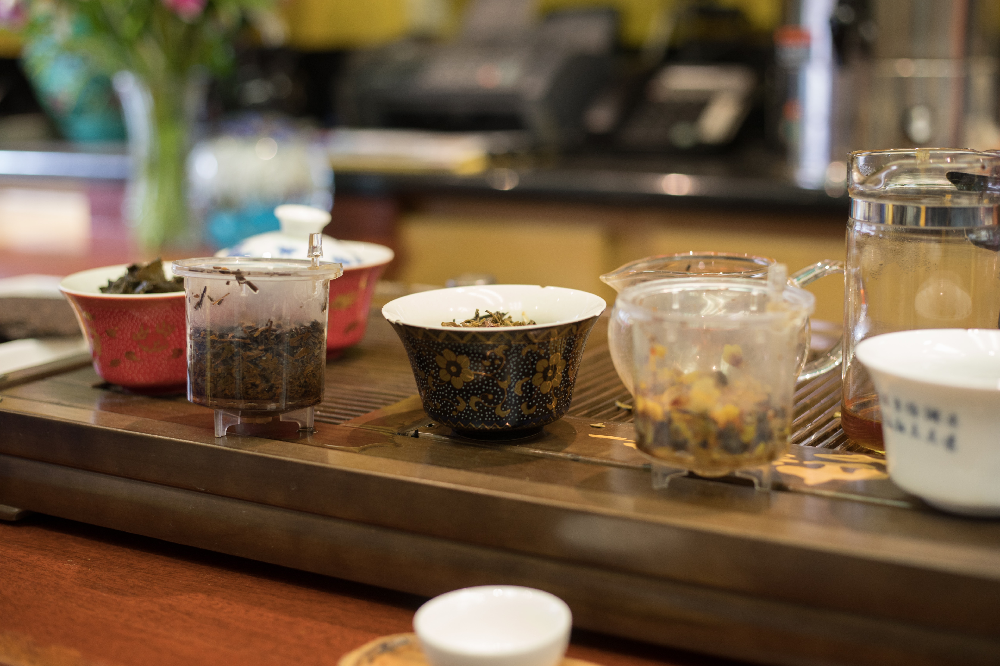

Matcha

From Wikipedia, the free encyclopedia Jump to navigationJump to search Matcha Matcha Scoop.jpg Type Green tea Other names 抹茶, "fine powder tea", maccha or macha Origin China Quick description Stone-ground Chinese-style green tea Regional names Matcha[a] (抹茶, English: /ˈmætʃə, ˈmɑːtʃə/;[1][2] Japanese: [mattɕa]; Mandarin: [mwǒ.ʈʂʰá]) is finely ground powder of specially grown and processed green tea leaves, traditionally consumed in East Asia. The green tea plants used for matcha are shade-grown for three to four weeks before harvest; the stems and veins are removed during processing. During shaded growth, the plant Camellia sinensis produces more theanine and caffeine. The powdered form of matcha is consumed differently from tea leaves or tea bags, as it is suspended in a liquid, typically water or milk. The traditional Japanese tea ceremony centers on the preparation, serving and drinking of matcha as hot tea, and embodies a meditative spirituality. In modern times, matcha is also used to flavor and dye foods, such as mochi and soba noodles, green tea ice cream, matcha lattes and a variety of Japanese wagashi confectionery. Matcha used in ceremonies is referred to as ceremonial-grade, meaning that the powder is of a high enough quality to be used in the tea ceremony. Lower-quality matcha is referred to as culinary-grade, but no standard industry definition or requirements exist for matcha. Blends of matcha are given poetic names known as chamei ("tea names") either by the producing plantation, shop, or creator of the blend, or by the grand master of a particular tea tradition. When a blend is named by the grand master of a tea ceremony lineage, it becomes known as the master's konomi. weiter lesen
History
Die Teepflanze wird seit mehreren tausend Jahren in China angebaut. Dort wurde im 6. Jahrhundert v. Chr. auch diese neue Variante der Verarbeitung von Tee hervorgebracht. Zur Zeit der chinesischen Tang-Dynastie wurde der zu Ziegeln oder anderen Formen gepresste Tee geröstet, zu Pulver gerieben und mit kochendem Wasser zubereitet. Der Dichter Lu Yü hat dies 780 n. Chr. in dem Werk Chajing ausführlich beschrieben. Die Zubereitung wurde in der nachfolgenden Song-Dynastie noch verfeinert; die Teeblätter kamen nach dem Dämpfen und Trocknen direkt in Steinmühlen und wurden zu Pulver gemahlen. Im 8. Jahrhundert brachten buddhistische Mönche Tee von China nach Japan. Die damals in China übliche Form der Teezubereitung mit gemahlenem Grüntee wurde in Japan seit der Nara-Zeit zur japanischen Teezeremonie weiterentwickelt. Hierbei werden traditionell in Steinmühlen staubfein gemahlene Teeblätter (Matcha) mit einem Teebesen in heißem Wasser aufgeschlagen. Zur Zeit der Ming-Dynastie kam die Methode auf, Teeblätter direkt in einer Teekanne aufzubrühen – heute die weltweit üblichste Form der Zubereitung. In dieser Zeit (16. und 17. Jahrhundert) verbreitete sich der grüne Tee auch in Europa. Siehe auch: Chinesische Teekultur weiter lesen